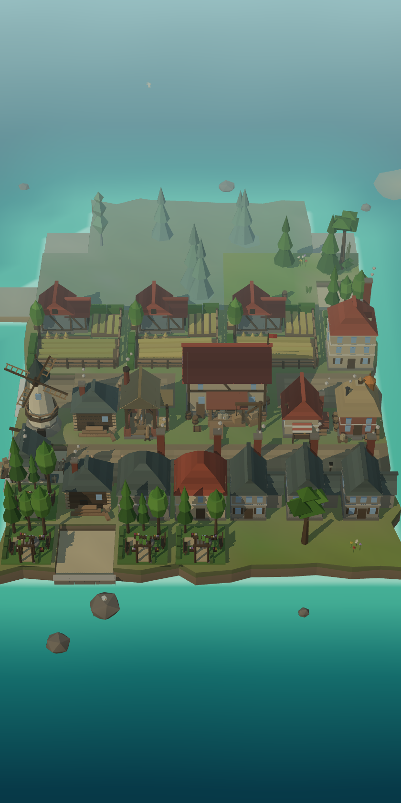
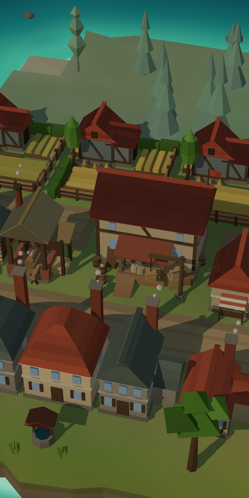
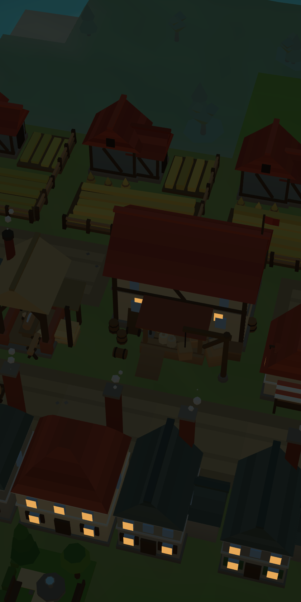

🌲 Łańcuchy produkcji
Drewno na deski, zboże na mąkę, mąka na chleb. Każdy budynek żywi się tym, co wytworzy sąsiad — a jeden zły wybór zatrzymuje całą ulicę.
Zbuduj wyspę. Nakarm miasto.
Drwal ścina las, tartak tnie deski, młyn miele zboże na mąkę — a browar walczy z młynem o to samo ziarno. Ty decydujesz, co powstanie pierwsze.
Za darmo · bez instalacji · telefon i komputer

Drewno na deski, zboże na mąkę, mąka na chleb. Każdy budynek żywi się tym, co wytworzy sąsiad — a jeden zły wybór zatrzymuje całą ulicę.
Bez drogi do magazynu warsztat stoi bezczynnie. Rysujesz je palcem po wyspie i patrzysz, jak tragarze ruszają z towarem.
Osadnikom wystarczą ryby. Awansuj dom, a mieszkańcy zapłacą wyższy podatek — ale zażądają chleba i piwa. Awans to Twoja decyzja, nie automat.


Wyspa pracuje także wtedy, gdy Cię nie ma — po powrocie odbierasz zarobek. Bez rejestracji, bez śledzenia, bez skrzynek z losowaniem. Gra jest po polsku.
Zacznij od chaty drwala